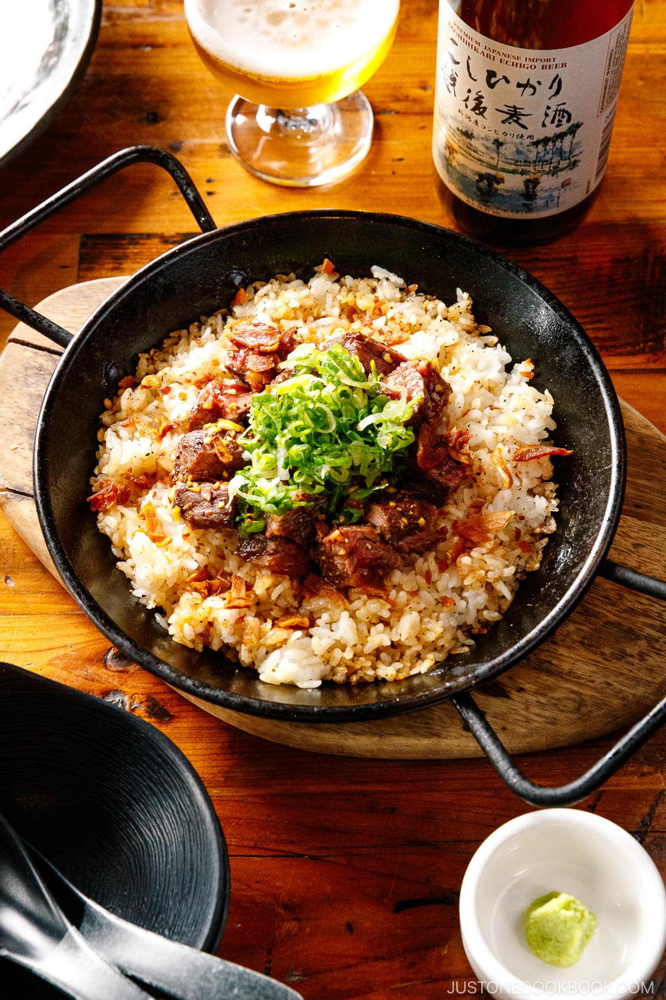

Steak Garlic Rice

Description
Get ready to fall in love with this amazing Japanese-style Steak Garlic Rice! Here, tender cubes of seared beef are tossed in a smoky steak sauce and nestled on a bed of buttery garlic rice that‘s crisped until golden in the pan. Top it off with crushed garlic chips for extra crunch and savory goodness!
Ingredients
- 8 oz sirloin flap stea
- 1/8 tsp Diamond Crystal kosher salt
- 1/8 tsp freshly ground black pepper
- 4 tsp Homemade Smoked Soy Sauce
- 3 tbs mentsuyu
- 1 clove garlic
- 1 tbs neutral oil
- 2 tbsp unsalted butter
- 2 cloves garlic
- 2 services cooked Japanese short-grain rice
- freshly ground black pepper
- 1 tbsp unsalted butter
- scallion
- fried garlic chips
Steps
- Lightly season both sides of 8 oz sirloin flap steak (or ribeye) with ⅛ tsp Diamond Crystal kosher salt and ⅛ tsp freshly ground black pepper. Set the steak aside on the countertop to bring it to room temperature, about 20–30 minutes. Tip: Bringing the steak to room temperature is important for achieving a medium-rare doneness.
- In a medium bowl, combine 4 tsp Homemade Smoked Soy Sauce, 2 Tbsp mentsuyu (concentrated noodle soup base), and minced garlic (I pressed 1 clove garlic using a garlic press) for the steak sauce. Mix them all together and set aside.
- Mince 2 cloves garlic (I use a garlic press) for the rice. Transfer 2 servings cooked Japanese short-grain rice to a large bowl.
- Heat a frying pan on medium low. When it‘s hot, add 2 Tbsp unsalted butter and minced garlic. Cook on medium heat for 3 minutes, stirring frequently.
- Be careful not to burn the garlic and butter. Once the garlic is fragrant and no longer raw, remove the pan from the heat and transfer the garlic butter to the bowl with the rice.
- Add 2 tsp mentsuyu (concentrated noodle soup base), ⅛ tsp Diamond Crystal kosher salt, and ⅛ tsp freshly ground black pepper to the bowl. Gently toss all the ingredients together and set aside for now.
- Heat a carbon steel pan or cast iron skillet on the stove over medium-high heat. Once hot, add 1 Tbsp neutral oil and spread it evenly. Add the steak to the pan and sear it for about 3–4 minutes on each side until medium rare. While the steak cooks on the first side, start cooking the garlic rice (go to the next heading).
- I use a cast iron grill press to press down the steak for even searing. After 3 minutes, flip the steak to the other side
- Press down the steak and sear the other side for another 3 minutes. Remove the steak from the pan when it reaches an internal temperature of 130℉ (54.4℃).
- Wrap the steak in a sheet of aluminum foil and let it rest for 2–3 minutes. The steak will continue to cook as it rests to reach medium-rare doneness.
- While you finish crisping the rice, cut the steak into ½-inch (1.3 cm) strips, then dice the strips into ½-inch (1.3 cm) cubes.
- Add the dice-cut steak to the steak sauce that you made earlier and toss to coat well. Then, assemble the Steak Garlic Rice.
- While the steak is cooking on the first side, heat 1 Tbsp unsalted butter for the garlic rice in another carbon steel pan or cast iron skillet set over medium heat. Once the butter is bubbling, add the cooled rice to the pan. Stir-fry the rice at first, tossing and flipping it over to heat up thoroughly. When it‘s heated through, spread the rice evenly in the pan and let it get crispy on the bottom. You can mostly attend to the steak while you crisp the garlic rice. Do not stir the rice during this time. Tip: Try to time the rice so that it‘s done crisping when the steak is done soaking. For example, you might turn up the heat a bit to help speed crisping or lower the heat if it‘s cooking too fast.
- When the rice is done crisping, take the pan off the heat. Then, add the dice-cut steak centered neatly on top of the garlic rice in the pan. You can drizzle some of the remaining steak sauce over the rice. Sprinkle 1 Tbsp of finely chopped green onion/scallion on top. To finish, crush 1 Tbsp fried garlic chips between your fingers and sprinkle over the rice.
- Present the Steak Garlic Rice directly in the pan at the table and portion onto individual plates. Enjoy!